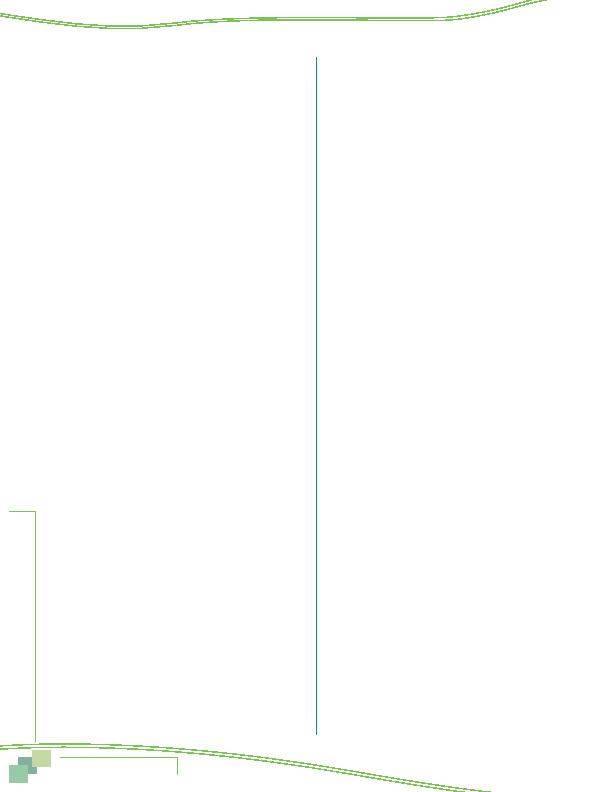

MWCOG-Comm
uter Conn
ecti
on
s-- 2010 State o
f th
e Comm
ute Report
9 2
ATTITUDE CHANGES/ACTIONS
TAKEN AFTER HEARING ADS
65 After seeing or hearing this advertising, were
you more likely to consider ridesharing or public
transportation?
1 yes
2 no (SKIP TO Q81)
9 DK/Ref (SKIP TO Q81)
66 After seeing or hearing this advertising, did
you take any actions to try to change how you
commute?
IF YES, ASK "What actions did you take?
(DO NOT READ)
No action
1 didn't take any action (SKIP TO Q81)
Sought information
2 looked for commute information on the internet
3 asked friend, family member, or co-worker for
commute information (referral)
4 contacted a local or regional organization for
commute information
5 looked for a carpool or vanpool partner
6 called a transit operator to ask about schedules or
routes
7 asked employer about telecommuting opportunities
8 asked employer about SmarTrip/SmartBenefit,
Metrochek
9 looked for information about guaranteed ride home
(GRH) program
10 looked for information about HOV lanes
Started participating in commute service/program
11 registered for guaranteed ride home (GRH) program
12 purchased alternative fuel vehicle (e.g., electric car,
hybrid car, CNG-fueled vehicle)
13 started using HOV lane to get to work
Changed personal situation, work schedule, or commute
route
14 moved my home or job location, changed jobs
15 started going to work earlier or later
16 changed or reduced number of days I work
17 changed route to work
Tried another way of getting to work, started using another
form of transportation
18 tried or started driving alone to work
19 tried or started carpooling to work
20 tried or started vanpooling to work
21 tried or started using bus to get to work
22 tried or started using train to get to work
23 tried or started bicycling or walking to work
24 tried or started telecommuting/teleworking
Other
25 other action (specify____________) (SKIP TO Q81)
99 DK/Ref (SKIP TO Q81)
68 Did the advertising you saw or heard encourage
you to take this action?
1 yes
2 no
9 DK/Ref
IF Q66 = 2, 3, 4, 5, 6, 7, 8, 9, OR 10, AND Q66 NE 19, 20,
21, 22, 23, OR 24 ASK Q70, OTHERWISE, SKIP TO Q71
70 How likely is it that you will try another type of
transportation for your commute to work, other
than driving alone, taxi, or motorcycle, within
the next year? Would you say it is ...
(READ
RESPONSES 1-3. DO NOT READ RESPONSE 9)
1 very likely
2 somewhat likely
3 not likely
9 DK/Ref
Collect info on mode/modes used before trying/starting new
alt mode skip out respondents who did not try alt mode and
respondents who answered this question in Q19
·
IF Q66 NE 19, 20, 21, 22, 23, OR 24, SKIP TO Q81
Autofill mode duration for respondents currently using
alternative mode (Q15) named in Q66
·
IF Q66 EQ 19 AND Q15 = 5 OR 6, AUTOFILL Q71 = "still
using," THEN SKIP TO Q72a
·
IF Q66 EQ 20 AND Q15 = 7, AUTOFILL Q71 = "still using,"
THEN SKIP TO Q72a
·
IF Q66 EQ 21 AND Q15 = 8 OR 9, AUTOFILL Q71 = "still
using," THEN SKIP TO Q72a
·
IF Q66 EQ 22 AND Q15 = 10, 11, 12, 13, AUTOFILL Q71 =
"still using," THEN SKIP TO Q72a
·
IF Q66 EQ 23 AND Q15 = 14,15, AUTOFILL Q71 = "still
using," THEN SKIP TO Q72a
·
IF Q66 EQ 24 AND Q15 = 2, AUTOFILL Q71 = "still using,"
THEN SKIP TO Q72a
Autofill duration for respondents who tried alt mode named in
Q66 in past two years (Q23)
·
IF Q66 = 19 AND Q23 = 5 OR 6, ANY DAY, AUTOFILL Q71
= Q24, THEN ASK Q72a
·
IF Q66 = 20 AND Q23 = 7, ANY DAY, AUTOFILL Q71 =
Q24, THEN ASK Q72a
·
IF Q66 = 21 AND Q23 = 8 OR 9, ANY DAY, AUTOFILL Q71
= Q24, THEN ASK Q72a
·
IF Q66 = 22 AND Q23 = 10, 11, 12, OR 13, ANY DAY,
AUTOFILL Q71 = Q24, THEN ASK Q72a
·
IF Q66 = 23 AND Q23 = 14 OR 15, ANY DAY, AUTOFILL
Q71 = Q24, THEN ASK Q72a
·
IF Q66 = 24 AND Q23 = 2, ANY DAY, AUTOFILL Q71 =
Q24, THEN ASK Q72a
Appendix--Survey Questionnaire